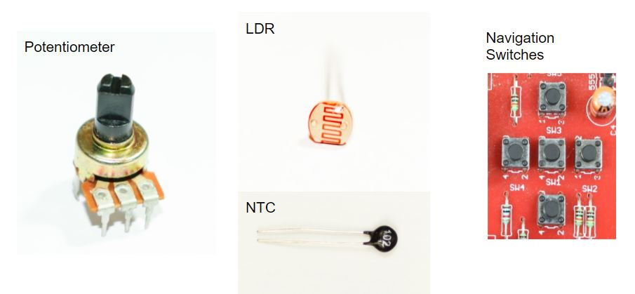
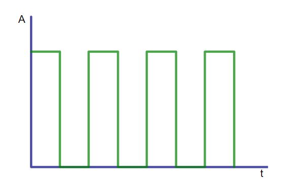

ANALOG OPERATIONS¶
ANALOG INPUTS¶
What are Analog signals?¶
An Analog signal is a time varying signals which can take any value between a specific range and is defined at each point of time.
What are digital signals?¶
Digital signals are the signals which have a finite set of possible values and they cannot take any other value.
What is ADC?¶
It stands for Analog to Digital Converter
Analog to Digital converter(ADC)¶
Way to convert an analog value to a digital value in Arduino
5 ——> 1023 1 ——> 1023 / 5
3 ——> (1023/5)*3 = 614
Light Dependent Resistor (LDR)¶
As it’s obvious from the name, LDR or a photoresistor is a resistor which changes its resistance value depending upon the intensity of light which falls on it.
Variable Voltage Divider from LDR¶
POTENTIOMETER¶
A potentiometer is a three terminal device with which enables us to vary the resistance to make a voltage divider.
Potentiometer as a Analog Input¶
NTC Thermistors¶
A thermistor is a resistor whose resistance depends upon the temperature of the environment it is kept in. NTC is acronym for “Negative Temperature Coefficient”. Thus, NTC Thermistor is a device whose resistance decreases with increase in temperature.
NTC as an Analog Input¶
EXERCISE:¶
To display ADC value from potentiometer on SSD
HARDWARE¶